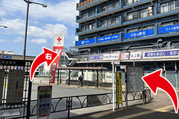
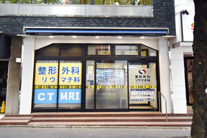
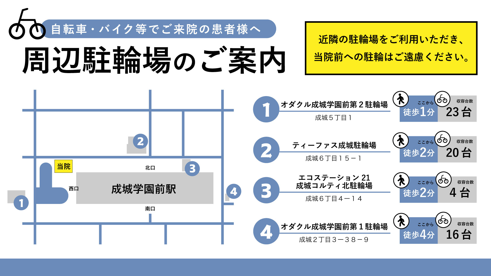

交通アクセス
成城整形外科リウマチ科
〒157-0066 東京都世田谷区成城6-5-25 第一住野ビル1・2階
当院までの道のり
電車をご利用の方
小田急小田原線「成城学園前」駅 西口より徒歩1分
成城学園前駅「西口」へ出ます。

正面にあるバスロータリーを右手側へ進み、右折します。

建物をぐるりと回り込むと入口がございます。
お車でお越しの方
近隣の駐車場「かたつむり成城第1駐車場」「かたつむり成城第2駐車場」と提携しております。
受付に駐車券をご提示で、40分のサービス券をお渡しいたします。
※予防接種のみの受診の場合、提携駐車場はご利用いただけません。
自転車でお越しの方
近隣の駐輪場をご利用いただき、当院前への駐輪はご遠慮ください。
